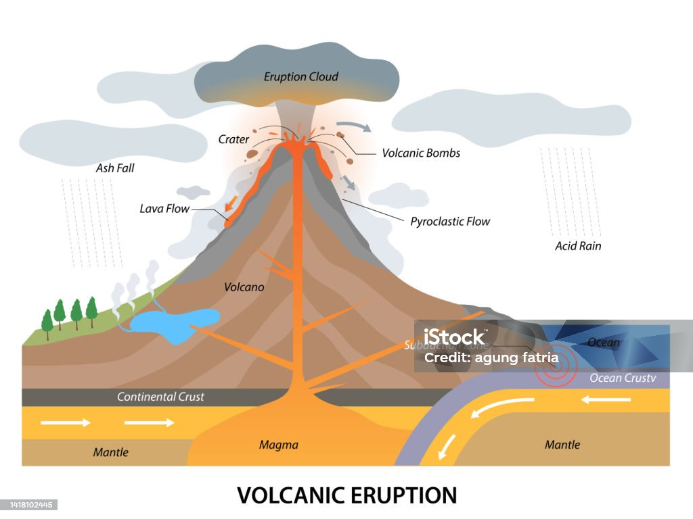

ภูเขาไฟปะทุ เกิดจากการเคลื่อนตัวของหินหนืดดันตัวขึ้นมาสู่พื้นผิวโลก โดยจะนำเอาทั้งไอน้ำ ฝุ่นละออง เถ้าถ่านและแก๊สต่าง ๆ ขึ้นมาสู่ชั้นบรรยากาศ ก่อนการปะทุไม่นานจะมีสัญญาณเตือนล่วงหน้า เช่น เกิดเสียงดังคล้ายฟ้าร้องติดต่อกัน แผ่นดินไหว พื้นดินบริเวณภูเขาไฟบวมหรือลาดเอียงผิดปกติ
ภูเขาไฟ เป็นช่องเปิดบนผิวดาวเคราะห์หรือดวงจันทร์ซึ่งมีวัตถุที่อุ่นกว่ารอบๆ ออกมาจากภายใน เมื่อวัตถุดังกล่าวออกมา ทำให้เกิดการปะทุ ซึ่งอาจเป็นการระเบิดปล่อยวัตถุขึ้นไปบนท้องฟ้า หรืออาจสงบ มีเพียงการไหลเบาๆ ของวัตถุ ขี้เถ้า หรือก็าซ หากเป็นวัตถุที่ออกมาอาจเป็นหินหลอมละลาย เรียกว่า ลาวา (lava) เมื่ออยู่บนผิว และเรียกว่า แม็กม่า (magma) เมื่ออยู่ใต้ดิน ภูเขาไฟมี 3 ลักษณะ คือ 1. ภูเขาไฟมีพลัง (active volcanoes) เป็นภูเขาไฟซึ่งเพิ่งเกิดการปะทุหรือกำลังจะมีการปะทุในอนาคต 2. ภูเขาไฟสงบ (dormant volcanoes) เป็นภูเขาไฟที่ไม่มีการปะทุแต่อาจจะเกิดขึ้นบางครั้งในอนาคต 3. ภูเขาไฟดับสนิท (extinct volcanoes) เป็นภูเขาไฟที่จะไม่เกิดการปะทุอีกเลย